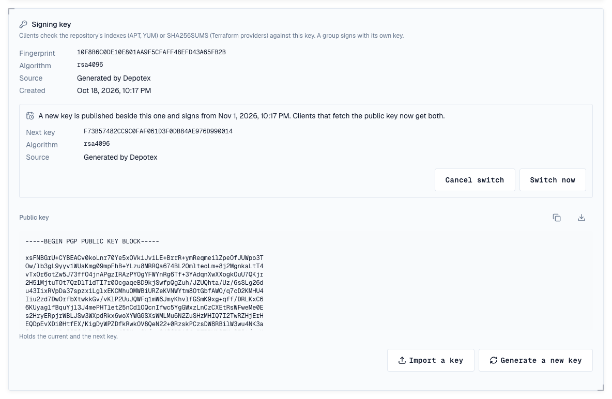
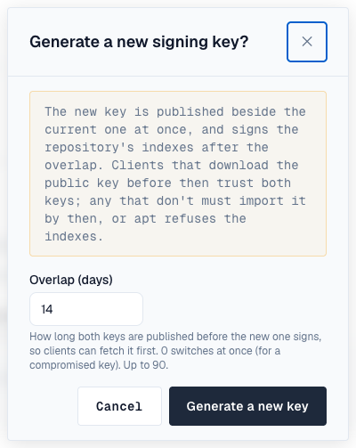
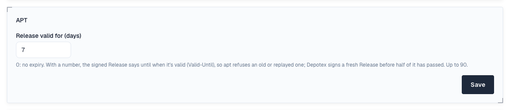
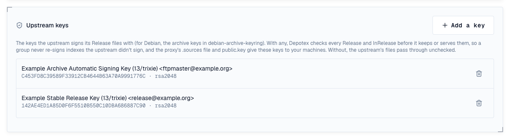
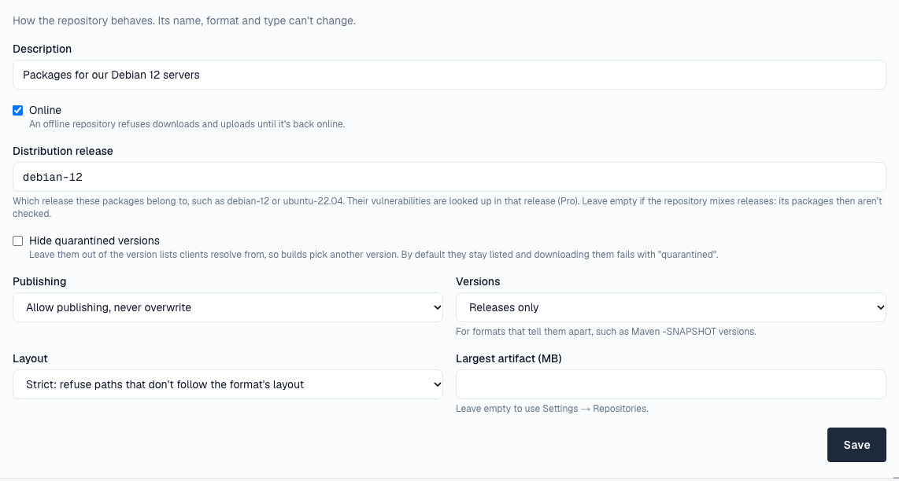

APT repositories serve Debian archives to apt, apt-get, apt-cache, apt-file and apt-get source. Hosted repositories take .deb and .udeb packages and source packages, and generate every distribution's indexes (Release, InRelease, Packages, Sources, Contents), signed with the repository's own key. Proxy repositories cache Debian, Ubuntu or a vendor's archive; groups combine them and sign the merged indexes with the group's key.
1. Add the repository
The repository writes the configuration for you, with its signing key included. On the machine that installs packages:
sudo curl -fsSL -u "me:$DEPOTEX_TOKEN" -o /etc/apt/sources.list.d/depotex.sources \
"https://depotex.example.com/repository/my-space/apt/depotex.sources?distribution=bookworm&components=main"
sudo apt-get update
sudo apt-get install helloPrefer the one-line format? Download the key to /etc/apt/keyrings/depotex.asc from …/public.key and use …/depotex.list?distribution=bookworm&components=main instead. A keyring that needs the binary form (older apt, /etc/apt/trusted.gpg.d/) can download …/public.gpg as is, with no gpg --dearmor. For a private space, put the credentials in /etc/apt/auth.conf.d/ rather than in the address. The repository's Usage tab shows these commands with your address filled in.
2. Publish a package
Upload with Publish permission. Choose the distribution and component with the query (?distribution=bookworm&component=main; several distributions comma-separated) or with ;deb.distribution=…;deb.component=… matrix parameters as JFrog clients send them; without them a package goes to stable/main.
curl -f -u "me:$DEPOTEX_TOKEN" --upload-file hello_1.0-1_amd64.deb \
"https://depotex.example.com/repository/my-space/apt/pool/main/h/hello/hello_1.0-1_amd64.deb?distribution=bookworm&component=main"
# or as Nexus clients do: POST the package, Depotex files it under pool/
curl -f -u "me:$DEPOTEX_TOKEN" -H "Content-Type: application/vnd.debian.binary-package" \
--data-binary @hello_1.0-1_amd64.deb "https://depotex.example.com/repository/my-space/apt/?distribution=bookworm"- The package is read: a bad .deb or .dsc is refused. Packages for all architectures show in every architecture's index.
- For a source package, upload its .orig.tar.* and .debian.tar.* (or .diff.gz) first, then the .dsc; apt-get source then finds it.
- Uploading the same file again with another distribution adds that distribution; a different file at the same path is refused. New APT repositories publish once.
- The indexes under dists/, public.key and public.gpg are generated and can't be uploaded. They update on the next apt-get update after an upload. Each index is offered plain, gzipped and xz-compressed; apt picks xz. An index that hasn't changed since apt last fetched it is answered from apt's copy (Hit in apt-get update).
3. Signing key
Every hosted APT repository and group signs its indexes with its own OpenPGP key, created the first time it's needed. On the repository's Settings tab, Signing key shows its fingerprint and lets those who administer the repository generate a new key or import their own (an armored private key, with its passphrase if it has one). Rotating and importing raise repository.signing_key.update, so a policy can require approval.
4. Changing the key without breaking machines
A new or imported key doesn't sign at once. For the overlap you choose (14 days unless you change it, up to 90), it's published beside the current key, which keeps signing: public.key, public.gpg and the .sources file hold both keys, so a machine that downloads any of them in that time trusts both. On the date the new key starts signing, and machines that fetched it carry on without a change. apt never fetches a key by itself, so make your machines download it again during the overlap (your configuration management, or the .sources command above).

- Switch now makes the new key sign at once, before its date: for a key that may be compromised. Machines that haven't fetched the new key refuse the indexes until they do.
- Cancel switch drops the new key; the current one keeps signing and is published alone again.
- An overlap of 0 switches at once, as for a compromised key. A repository's first key is always used at once.
- Each step raises repository.signing_key.update (rotate, import, switch, cancel, and activate when the date comes) and is recorded in the audit log.

Depotex creates RSA keys, which every apt can check. An imported ed25519 key works with current systems, but apt on systems with gpgv 1.x (Ubuntu 16.04, Debian 8 and older) can't check its signatures and refuses the repository; the Signing key card says so when an APT repository's key is ed25519.
5. Release validity
By default a signed Release doesn't expire. Set Release valid for (days) on the Settings tab of a hosted repository or group (1 to 90; 0 turns it off) and each Release says until when it's valid (Valid-Until). apt then refuses a Release past that date, so a mirror, cache or attacker can't keep serving your machines an old one with missing security updates. Depotex signs a fresh Release before half of the period has passed, so a repository nobody uploads to stays valid. Changing it raises apt.settings.update.

6. Versions and policies
- Each package version is a version in Depotex, compared the way dpkg does (~ sorts first and marks a pre-release). Cleanup policies, quotas, quarantine and the block list apply to it.
- Blocked versions are left out of the indexes and their files refused; quarantined versions too when the repository hides them.
7. Proxy repositories
Add an upstream with the Debian archive, Debian security updates or Ubuntu archive preset, or any archive's address (the folder that holds dists/), allow it for the space, then create a proxy repository. Its Release files pass through untouched, so clients keep trusting the upstream's own key (its .sources file names no Depotex key); packages are fetched when first asked for and kept, and by-hash files are checked against the hash in their name. A proxy can also reach an APT repository of another Depotex (Depotex link).
8. Checking the upstream's signature
Give a proxy the keys its upstream signs with, and Depotex checks the upstream's Release and InRelease itself before it keeps or serves them, rather than only passing the signatures on. On the proxy's Settings tab, Upstream keys → Add a key, and paste the armored public keys (for Debian, the archive keys from the debian-archive-keyring package; a file with several keys adds them all).
- A Release that isn't signed, or doesn't verify with one of the keys, is neither kept nor served: clients get an error (upstream_unsigned, upstream_signature_invalid), and a copy that verified before is served instead when the proxy serves stale copies.
- Copies cached before you added the keys are checked the next time they're asked for.
- A group with the proxy as a member leaves it out while its Release doesn't verify, so the group never signs indexes your upstream didn't.
- The proxy hands the keys to your machines: its .sources file names them in Signed-By, and public.key / public.gpg serve them.
- Adding or removing a key raises apt.settings.update.

9. Groups
An APT group merges its members' indexes into its own, signed with the group's key, keeping each package version from the first member that has it. A group of a full mirror would merge every architecture: on the group's Settings tab, Architectures limits it to the ones your machines use (all is always included). A group's own Release valid for (days) applies to its merged Release. Uploads to a group go to the member its rules choose.
10. Vulnerabilities
Set the repository's Distribution release under its Settings (for example debian-12 or ubuntu-22.04, Pro): each package is then checked against that release's advisories, by its source package (libssl3 as openssl), and shows on its Security tab. Debian and Ubuntu releases are supported; a repository that mixes releases is better left unset, because one release is assumed for all its packages.

11. In the artifact browser
Packages show by name, then their versions, with each file's checksums.
12. Limits
- Groups don't merge Contents or translation files: apt-file through a group finds nothing.
- Versions that differ only by epoch (1:2.0-1 and 2.0-1) count as one version for cleanup, quotas and the browser.
- A proxy without upstream keys passes the upstream's signatures on unchecked; apt checks them on your machines. With keys, the proxy checks Release files; the package lists and packages they name are checked by groups and by apt.
- Release lists MD5 and SHA-256 checksums, not SHA-512; apt uses SHA-256.
- A machine that doesn't download the key again during a key change's overlap refuses the indexes once the new key signs.
- The browser doesn't show a package's control fields or dependencies yet.